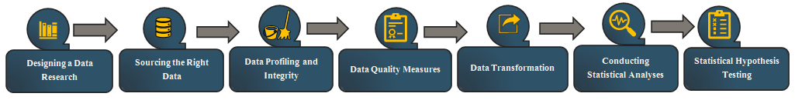
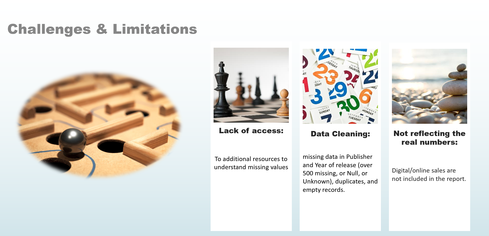

Overview
GameCo is a video game company which wants to use data to inform the development of new games in October 2016. GameCo’s stakeholders (executive board) was planning the marketing budget for 2017 and were assuming that sales for the various geographic regions have stayed the same over time.
Objective
Using previous sales data among the geographical regions to optimize the marketing budget plan and maximize the ROI.
- Project Scale: 20 Days
- Analysis based on: Last 10 years (2006- 2016)
- Top-three Sales Regions
North America, Europe, and Japan
.
Key Questions:
- - How have the sales figures varied between geographic regions over time?
- - re certain types of games more popular than others?
- Are certain types of platforms more popular than others?


- Data cleaning
- Visualization in Microsoft Excel
- Pivot tables
- Calculated fields
- presentation and communication with stakeholders

- Format: Excel-CSV
- Records: 16.6 titles
- Information: Game title, Platform, Year, Genre, Publisher, Sales reports
-
Data Citation:
VGChartz,
N.B. The sales numbers represent units sold in millions not the revenue generated.
Last update: 2017
Recommendation
-
Finding data on digital markets to have a more accurate picture of the trends in sales.
- Investigating new technologies like Cloud Gaming Services with streaming high-quality & multi-user on any device via a subscription-based model
- Studying global economy circumstances (e.g., 2008 recession), marketing, games published in the region, availability and accessibility of gaming consoles, changing in financial situations and spending behavior of people may also reveal interesting trends.

Deliverables